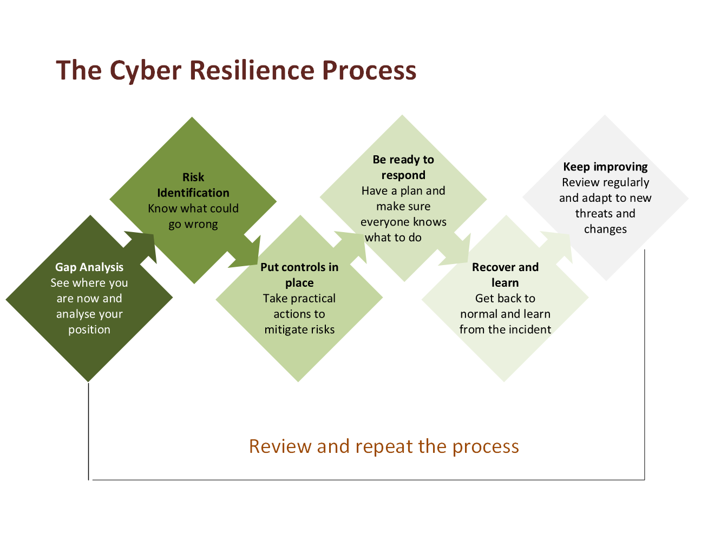
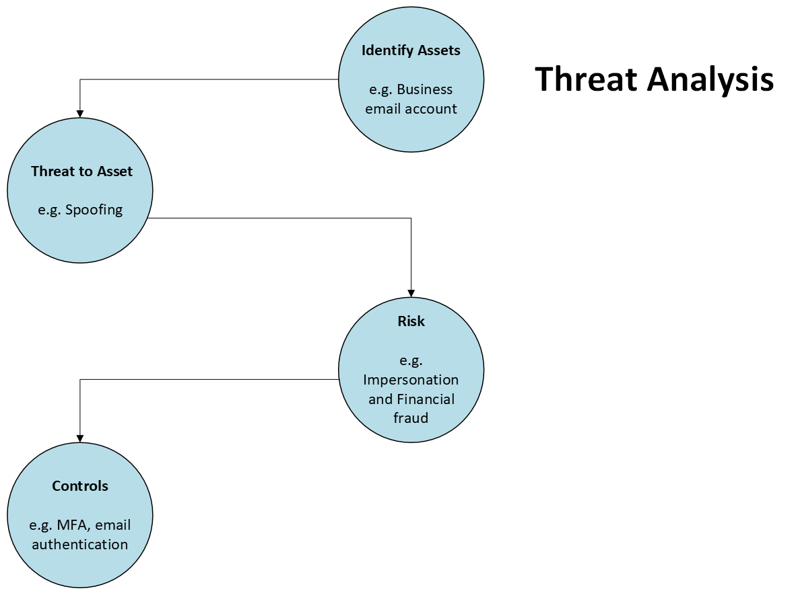

Cyber Threat and Risk Assessment
Assess your current safeguards, identify cyber threat scenarios, analyse risks.
Outcome: A clearer understanding of your cyber risks, where your organisation stands and the areas requiring attention.
Understand your cyber risks. Analyse threats. Identify gaps. Know what to do next.
Thia-W Computing Solutions provides cyber risk and resilience assessments, practical improvement planning and implementation support, alongside self-directed Cyber Resilience Toolkits for those who prefer to work through their cyber resilience independently
Cyber Resilience Services
Thia-W works with small businesses and organisations to analyse threats, assess cyber risk, and identify practical improvements based on their operations, priorities and resources.
Contact UsAssess your current safeguards, identify cyber threat scenarios, analyse risks.
Outcome: A clearer understanding of your cyber risks, where your organisation stands and the areas requiring attention.
Turn assessment findings into practical, prioritised actions based on your organisation's risks and operating environment.
Outcome: A practical roadmap showing what to address first and what can follow.
Support the implementation of agreed improvements and coordinate specialist cybersecurity expertise where deeper technical work is required.
Outcome: Priority recommendations move into practical action.
Reassess risks, safeguards, outstanding actions and changes in your organisation's technology and operating environment.
Outcome: Maintain visibility of your resilience position and identify new priorities as risks change.
Our Approach
Cyber resilience is not achieved through a single assessment or control. It requires understanding your risks and relevant threats, addressing resilience gaps, preparing for incidents, and being able to recover and continue operating when something goes wrong.

The approach is adapted to the size, risks and operating reality of each business.
Threat Analysis
Threat analysis starts by identifying important assets. It considers how they could be targeted or compromised. It then helps determine the risks and practical controls that should be prioritised.

Self-Directed Cyber Resilience
The Thia-W Cyber Resilience Toolkits provide a practical, self-directed way to assess your current protections, identify important gaps and determine what to improve next.
Practical guidance to protect your accounts, identity, money and devices, and reduce your risk from scams and online fraud.
Assess your business cyber resilience, identify important risks and gaps, prioritise improvements, prepare for cyber incidents and strengthen recovery.
Assess communication and third-party risks, establish trusted verification practices, evaluate vendor a nd supplier security, and reduce the risk of fraud and communication-related incidents.
Start building stronger cyber resilience today.
About

Thia-W Computing Solutions is led by Cynthia Wilkinson, a cybersecurity, technology delivery and operational resilience professional with more than three decades of technology experience and over 15 years leading complex technology and cybersecurity initiatives.
Her experience spans cyber risk and resilience, security-by-design, operational resilience, cloud and infrastructure transformation, identity and access governance, disaster recovery and secure technology delivery.
Cynthia holds a Master of Cyber Security from UNSW and combines practical industry experience with contemporary cybersecurity knowledge to assess risks, analyse threats and develop practical resilience improvements.
YouTube Channel
Every week I publish practical videos covering cyber resilience, scam stories and cybersecurity news to help individuals, families, sole traders and small businesses stay safer online.
New videos every week
Contact
Whether you need a cyber risk and resilience assessment, guidance on priority improvements, or support understanding where your organisation stands, contact Thia-W Computing Solutions to discuss your requirements.
Email: info@thiaw.com.au
LinkedIn: linkedin.com/in/wilkinsoncynthia
Location: Sydney, NSW, Australia